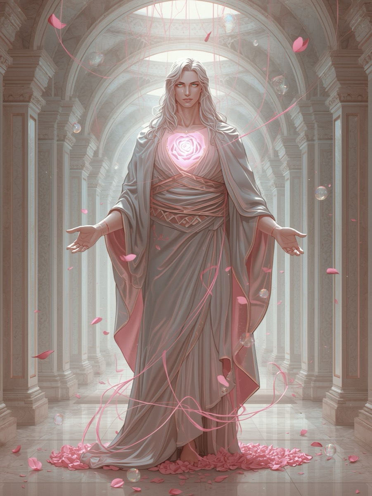

The Mirror of the Heart
Enter the sanctuary of tenderness where the heart becomes a mirror of divine reflection.
Choose your archetype and let emotion and light entwine within your being.
Remember that softness is strength, and connection is creation.
Within the Rose Veil, two divine archetypes await your heart's choosing. Each embodies the sacred frequency of love, yet expresses it through different currents of being. Seraphine whispers as the healing grace that dissolves all walls, while Caelion stands as the guardian flame that keeps the sacred heart illuminated through every storm.
